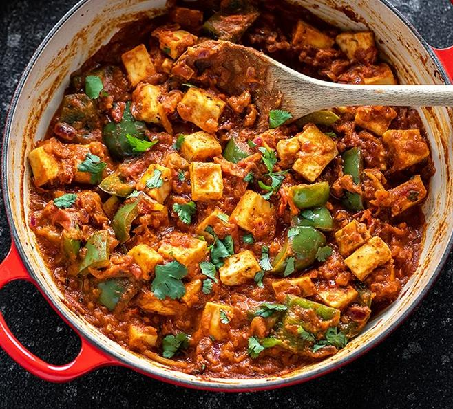

Kadahi Paneer

The best recipe for the best dish in the world by the best cook on the best website
Why Kadahi Paneer is the best dish ever
Kadahi Paneer, with its rich blend of flavors and textures, reigns supreme as the epitome of culinary delight. This Indian delicacy tantalizes the taste buds with its succulent chunks of paneer cooked to perfection in a spicy tomato-based gravy, infused with aromatic spices like cumin, coriander, and garam masala. Its vibrant colors and robust flavors make it a feast for both the eyes and the palate. Whether enjoyed with fluffy naan or steamed rice, Kadahi Paneer never fails to evoke a sense of gastronomic euphoria, earning its well-deserved status as the ultimate comfort food and a timeless favorite among food enthusiasts worldwide.
The Ingredients
- Paneer (Indian cottage cheese), cut into cubes
- Tomatoes, finely chopped
- Onions, thinly sliced
- Capsicum (bell peppers), sliced
- Green chilies, chopped (optional, for extra heat)
- Ginger-garlic paste
- Cooking oil or ghee (clarified butter)
- Cumin seeds
- Coriander powder
- Garam masala
- Turmeric powder
- Red chili powder
- Kasuri methi (dried fenugreek leaves)
- Fresh cilantro (coriander leaves) for garnish
- Salt to taste
Lets Cook
- Cut paneer into cubes and set aside.
- Heat oil or ghee in a kadai (Indian wok) over medium heat.
- Add cumin seeds and let them splutter.
- Sauté sliced onions until golden brown.
- Add ginger-garlic paste and chopped green chilies, sauté for a minute.
- Pour in tomato puree and cook until it thickens.
- Add sliced capsicum and cook for a few minutes.
- Now, add coriander powder, turmeric powder, red chili powder, and garam masala. Mix well.
- Let the spices cook for a minute, then add the paneer cubes.
- Crush kasuri methi between your palms and sprinkle over the kadahi paneer.
- Season with salt according to taste.
- Cook for another 2-3 minutes, stirring gently, until paneer absorbs the flavors.
- Garnish with fresh chopped cilantro (coriander leaves).
- Remove from heat and serve hot with naan or rice.